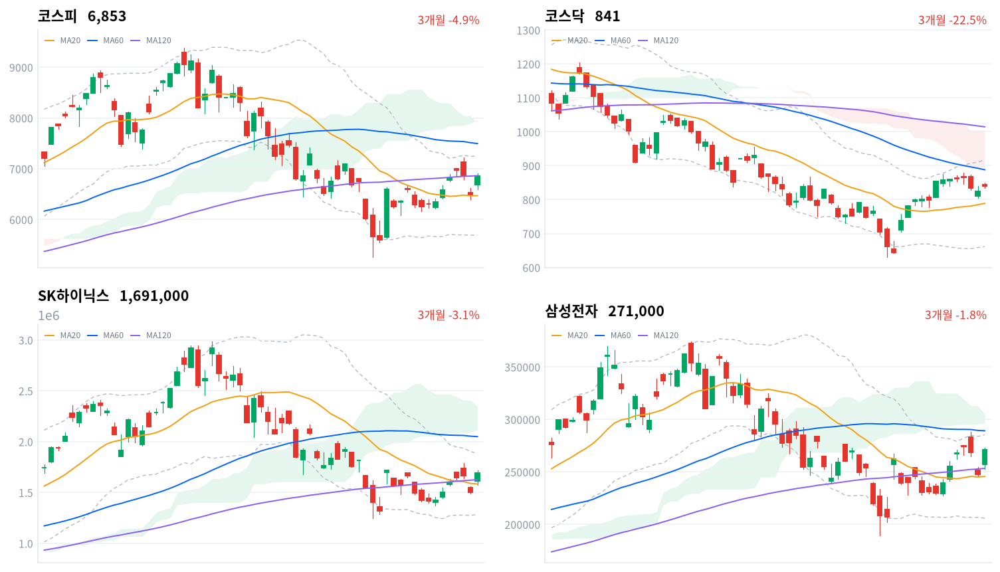
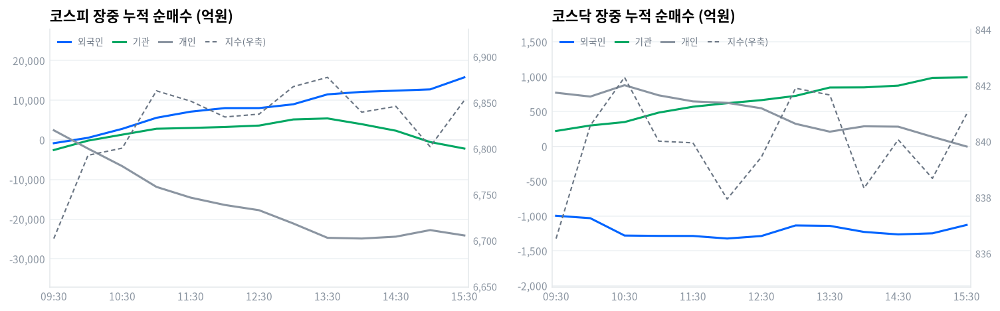

외국인이 1조7,068억원 순매수(당일 잠정)하며 지수를 끌어올린 반면 개인·기관은 동반 순매도했고, 코스닥은 상대적으로 완만한 1.99% 상승에 그쳐 이번 급등이 대형 반도체주에 집중된 장세임을 드러냈다.
오늘 코스피 5.89% 급등의 동인은 거시 재료가 아니라 개별 기업의 주주환원 이벤트다. SK하이닉스가 전일 장 마감 후 40조원 규모 자사주 소각을 이사회에서 결의했고, 삼성전자도 8월 중 이사회에서 100조원을 넘는 특별배당 등 주주환원안을 확정할 것으로 전해지며 두 대형주가 반도체 업종 전체를 끌어올렸다. 반도체와반도체장비 업종은 +10.51%로 전체 171종목 중 114종목(66.7%)이 함께 오르며 '폭넓은 상승 주도'로 판정됐고, 거래대금 상위 1·2위도 SK하이닉스(9.11조원)·삼성전자(6.96조원)가 나란히 차지했다.
정합성·괴리가격과 수급의 방향은 코스피에서 뚜렷이 정합한다. 외국인이 1조7,068억원을 순매수(당일 잠정)하며 개인(-2조2,712억원)·기관(-4,895억원)의 동반 매도를 압도했고, 장중 궤적에서도 외국인 누적 순매수선이 09:42 순매도에서 순매수로 전환한 뒤 15:19 1조5,795억원까지 단조롭게 불어나며 지수 상승과 같은 방향으로 움직였다.
다만 기관 내부를 뜯어보면 금융투자(프로그램·선물 연계) 창구가 장 막판까지 6,781억원 순매도로 짙어져 지수 상승이 폭넓은 국내 기관 참여가 아니라 외국인 단일 축과 반도체 개별주 쏠림으로 만들어졌다는 괴리가 남는다. 코스닥은 더 뚜렷한 괴리를 보였는데, 외국인이 1,328억원 순매도(당일 잠정)한 가운데서도 지수가 1.99% 오른 것은 기관(+1,194억원)의 순매수가 받쳐준 결과로, 코스피와는 다른 수급 축이 작동했다.
다음 촉매·확인 트리거기술적으로 코스피 종가(6,852.58)는 20일선(6,465.94)을 크게 웃돌지만 일목균형표 구름 하단(7,847.34)에는 아직 한참 못 미치고, 120일선(6,841.73)과는 불과 0.16% 차이로 거의 겹쳐 있어 이 구간의 지지 여부가 단기 방향을 가를 확인 지표다. 삼성전자의 실제 이사회 의결 시점과 환원 규모가 "8월 중"으로만 보도돼 구체 일자가 미확정인 만큼 그 발표 내용이 소문에 부합하는지가 다음 확인 트리거이며, 8월 27일 한국은행 금융통화위원회에서 최근 반도체 랠리에 대한 과열 경계 코멘트가 나오는지도 지켜봐야 한다.
오늘 장중 수급의 정정 폭(외국인 15:30 스냅샷 1조5,758억원 → 확정 1조7,068억원, 기관은 반대로 -2,195억원 → -4,895억원으로 악화)도 다음 거래일 개장 전 다시 확인할 대상이다.
| 지수 | 종가 | 등락률 | 시가 | 고가 | 저가 | 전일 종가 |
|---|---|---|---|---|---|---|
| 코스피 | 6,852.58 | +5.89% | 6,680.34 | 6,904.55 | 6,600.09 | 6,471.17 |
| 코스닥 | 840.89 | +1.99% | 843.99 | 850.77 | 834.69 | 824.46 |
코스피는 시가(6,680.34)부터 전일 대비 큰 폭 갭업 출발한 뒤 오전 내내 우상향해 11:00 6,862.83까지 오르고 오후 초반 13:30 6,877.54(30분봉 기준 고점)까지 재차 상승했다. 이후 14:00~15:00 구간에서 6,802.01까지 밀리며 숨 고르기를 거쳤지만 마감 동시호가에서 다시 반등해 6,852.58로 마쳤다.
코스닥은 시가(843.99) 직후 09:30 836.53까지 밀리며 개장 초반 매물을 소화한 뒤 10:30 842.29까지 반등했고, 이후 838~842 구간의 좁은 박스권을 오후 내내 오가다 마감 무렵 840.89로 마쳤다. 코스피 대비 상승폭이 크게 제한된 것은 반도체 재료가 대형주에 집중되고 코스닥 중소형주로는 크게 번지지 않았음을 보여준다.
이날 급등의 촉발 요인은 SK하이닉스의 40조원 자사주 소각 결의(전일 장 마감 후 이사회)와 삼성전자의 100조원대 주주환원 기대감 두 갈래이며, 두 재료가 겹치며 장중 사이드카(매수) 발동까지 보도됐다(아시아경제·코리아중앙데일리·트레이딩키).

코스피·코스닥·SK하이닉스·삼성전자 3개월 일봉에 이동평균(20·60·120)·볼린저밴드·일목균형표 구름대를 오버레이했다. 상승 캔들은 녹색, 하락 캔들은 적색으로 표시된다.
코스피는 20일선(6,465.94)을 5.98% 웃돌지만 60일선(7,541.74)에는 9.14% 못 미치는 혼조 배열이고, 120일선(6,841.73)과는 종가(6,852.58) 기준 0.16% 차이로 거의 붙어 있다. 볼린저밴드 %b는 0.748로 상단(7,244.48)에 근접했고, 일목균형표 구름은 여전히 위(하단 7,847.34·상단 8,154.93)에 있어 가격이 구름 아래에 머문 상태다. 20일 스윙 고점(7,216.62)과 볼린저 상단(7,244.48)을 돌파하면 60일선(7,541.74)을 거쳐 구름 하단(7,847.34)까지 여지가 열리는 반면, 120일선(6,841.73)을 다시 이탈하면 20일선(6,465.94) 부근까지, 최후 지지선은 볼린저 하단(5,687.41)·20일 저점(5,262.77)이다.
코스닥은 20일선(787.57)이 60일선(880.61)과 120일선(1,010.8)보다 낮은 역배열 구조를 유지하고 있어 오늘 반등에도 구조적 약세는 해소되지 않았다. 종가(840.89)는 일목 전환선(827.94)을 웃돌지만 구름(하단 891.53·상단 1,003.8) 아래에 있고 볼린저 %b는 0.705다. 20일 스윙 고점(879.29)과 60일선(880.61)을 함께 돌파하면 구름 하단(891.53)-볼린저 상단(917.68) 구간이, 그 위로는 구름 상단(1,003.8)·120일선(1,010.8)이 저항으로 남아 있고, 전환선(827.94)을 이탈하면 기준선(755.14)·20일선(787.57) 부근까지 되돌림 위험이 있으며 최후 지지선은 볼린저 하단(657.46)·20일 저점(630.99)이다.
SK하이닉스는 자사주 소각 재료로 급등했지만 여전히 60일선(2,049,333원)에는 17.49% 못 미치는 혼조 배열이며, 종가(1,691,000원)가 일목 기준선(1,708,500원)에 근접한 지점이 단기 분수령이다. 기준선을 회복하면 볼린저 상단(1,881,502원)을 거쳐 20일 스윙 고점(1,948,000원)·60일선(2,049,333원)까지 열리고, 120일선(1,626,458원)을 이탈하면 20일선·전환선(1,582,700원·1,582,500원) 부근이 지지선이 되며 최후 지지선은 볼린저 하단(1,283,898원)·20일 저점(1,246,000원)이다.
삼성전자는 20일선(245,650원)을 10.32% 웃돌고 120일선(253,325원)도 넘어선 상태로 네 종목 중 가장 강한 위치에 있지만 60일선(289,150원)까지는 아직 6.28% 남아 있다. 종가(271,000원)가 볼린저 상단(285,367원)·20일 스윙 고점(288,000원)·60일선(289,150원)을 순차로 돌파하면 구름 하단(296,500원)까지 여지가 열리고, 전환선(257,750원)을 이탈하면 120일선(253,325원)·20일선(245,650원) 부근이 지지선이 되며 최후 지지선은 볼린저 하단(205,933원)·20일 저점(189,200원)이다.
위 레벨은 20·60·120일 이동평균, 볼린저밴드, 일목균형표, 스윙 고저를 기계적으로 계산한 값이며 투자 권유가 아니다.
| 주체 | 순매수(억원) |
|---|---|
| 개인 | -22,712 |
| 외국인 | +17,068 |
| 기관 | -4,895 |
| 주체 | 순매수(억원) |
|---|---|
| 개인 | +16 |
| 외국인 | -1,328 |
| 기관 | +1,194 |
코스피는 외국인 단일 축이 지수를 끌어올린 하루였다. 개인이 2조2,712억원(당일 잠정), 기관이 4,895억원(당일 잠정) 각각 순매도한 반면 외국인은 1조7,068억원(당일 잠정)을 순매수해 이 매도 물량을 대부분 받아냈고, 전일(8/19) 개인이 4조6,357억원 순매수·외국인이 3조4,726억원 순매도했던 것과 정반대 구도가 하루 만에 나타났다. 이는 전일 급락 국면에서 저가 매수에 나섰던 개인이 오늘 반등을 차익 실현 기회로 활용하고, 반대로 전일 매도했던 외국인이 자사주 소각·주주환원 재료에 반응해 되돌아온 흐름으로 읽힌다.
코스닥은 외국인이 1,328억원(당일 잠정) 순매도한 가운데 기관이 1,194억원(당일 잠정) 순매수하며 지수를 받쳤고 개인은 16억원(당일 잠정)으로 사실상 중립이었다. 코스피와 코스닥의 외국인 수급 방향이 엇갈린 것은 이번 재료가 코스피 대형 반도체주에 집중된 이벤트이고 코스닥 중소형주로는 온기가 크게 번지지 않았다는 점과 정합한다.

누적 순매수(억원), 정규장 09:30~15:30 30분 앵커 기준. 지수는 우측 축.
| 시각 | 코스피(억원) | 코스닥(억원) | ||||
|---|---|---|---|---|---|---|
| 개인 | 외국인 | 기관 | 개인 | 외국인 | 기관 | |
| 09:30 | 2,407 | -844 | -2,565 | 770 | -996 | 221 |
| 10:00 | -2,208 | 518 | -200 | 715 | -1,031 | 300 |
| 10:30 | -6,636 | 2,775 | 1,309 | 878 | -1,280 | 349 |
| 11:00 | -11,861 | 5,564 | 2,800 | 733 | -1,285 | 485 |
| 11:30 | -14,565 | 7,107 | 2,997 | 646 | -1,286 | 569 |
| 12:00 | -16,421 | 8,004 | 3,247 | 625 | -1,323 | 620 |
| 12:30 | -17,741 | 8,007 | 3,603 | 547 | -1,287 | 664 |
| 13:00 | -21,087 | 8,965 | 5,145 | 324 | -1,135 | 725 |
| 13:30 | -24,701 | 11,466 | 5,399 | 211 | -1,141 | 845 |
| 14:00 | -24,880 | 12,096 | 3,950 | 288 | -1,228 | 847 |
| 14:30 | -24,403 | 12,401 | 2,299 | 283 | -1,264 | 872 |
| 15:00 | -22,750 | 12,721 | -554 | 137 | -1,248 | 983 |
| 15:30 | -24,103 | 15,758 | -2,195 | -2 | -1,128 | 991 |
코스피 외국인 누적선은 09:42 순매도에서 순매수로 전환한 뒤 되돌림 없이 단조롭게 불어나 15:19 1조5,795억원(장중 최고치)까지 늘었고, 이는 §3에서 본 코스피의 오전~오후 초반 우상향 궤적과 같은 방향으로 움직였다. 개인은 09:45 순매수에서 순매도로 전환한 뒤 14:01 -2조4,931억원(장중 최저치)까지 매도가 누적됐는데, 14:00~15:00 코스피가 6,877.54에서 6,802.01로 밀린 구간과 시점이 겹쳐 개인 매도가 그 조정의 한 축이었음을 보여준다.
기관은 10:01 순매도에서 순매수로, 14:58 다시 순매도로, 15:07 순매수로, 15:13 다시 순매도로 네 차례 방향을 바꾸며 장 후반으로 갈수록 변동성이 커졌다.
기관 내부를 금융투자와 연기금등으로 나눠 보면 15:30 시점 금융투자(프로그램·선물 연계 성격)는 -6,781억원으로 짙은 순매도를 기록한 반면 연기금등(정책성 장기자금)도 -1,519억원으로 소폭 매도 우위였다. 두 축이 모두 매도 쪽에 머문 것은 오늘 상승이 국내 기관의 저가 매수보다 외국인 단일 축의 힘으로 만들어졌다는 뜻이며, 아래 프로그램 매매 표의 비차익 순매수(+1조2,719억원)가 오히려 더 강한 매수 신호를 보인 것과는 결이 다르다 — 프로그램 매매 통계와 투자주체별 금융투자 항목은 산출 기준이 달라 직접 등치할 수 없다는 점에 유의해야 한다.
정규장 마지막 관측(15:30) 대비 확정치 전환 과정에서 되돌림이 뚜렷했다. 코스피 개인은 -2조4,103억원에서 확정 -2조2,712억원으로 매도 강도가 소폭 줄었고, 외국인은 1조5,758억원에서 확정 1조7,068억원으로 순매수가 더 늘었으며, 기관은 -2,195억원에서 확정 -4,895억원으로 오히려 매도가 짙어졌다.
코스닥은 개인이 -2억원에서 +16억원으로 미세하게 순매수 전환했고 외국인은 -1,128억원에서 -1,328억원으로, 기관은 991억원에서 1,194억원으로 각각 방향을 유지한 채 강도만 커졌다. 다음 거래일 개장 전에는 이 정정 폭이 반복되는지, 특히 코스피 기관의 매도 강화가 이어지는지를 확인해야 한다.
| 시장 | 차익 순매수(억원) | 비차익 순매수(억원) | 전체 순매수(억원) |
|---|---|---|---|
| 코스피 | -3,675 | +12,719 | +9,044 |
| 코스닥 | +13 | -1,131 | -1,118 |
코스피는 방향성 바스켓 매매인 비차익이 1조2,719억원 순매수로 강하게 유입돼 위 외국인 순매수(1조7,068억원)와 같은 방향을 가리키는 반면, 선물 연계 기계적 매매인 차익은 3,675억원 순매도로 소폭 역방향이었다. 두 항목이 상쇄되며 전체 프로그램 순매수는 9,044억원에 그쳤지만 그 구성을 보면 오늘 코스피 상승은 기계적 차익거래가 아니라 방향성 있는 비차익 자금이 이끈 장세였다는 뜻이다.
코스닥은 비차익이 1,131억원 순매도로 지수 상승(+1.99%)과 어긋났는데, 위에서 본 대로 코스닥은 기관의 개별종목 순매수(+1,194억원)가 지수를 받친 것이지 프로그램 자금이 유입된 결과는 아니었던 것으로 정합한다.
| 순위 | 종목/ETF | 구분 | 거래대금 | 비고 |
|---|---|---|---|---|
| 1 | SK하이닉스 | 개별주 | 9.11조원 | - |
| 2 | 삼성전자 | 개별주 | 6.96조원 | - |
| 3 | 반도체 테마 ETF | 테마·롱 | 2.16조원 | 9종 합산 |
| 4 | 삼성전자우 | 개별주 | 0.67조원 | - |
| 5 | SK하이닉스 레버리지 | 레버리지·롱 | 0.55조원 | 2종 합산 |
| 6 | SK이터닉스 | 개별주 | 0.39조원 | - |
| 7 | 금호건설 | 개별주 | 0.39조원 | - |
| 8 | 삼성전자 레버리지 | 레버리지·롱 | 0.25조원 | 2종 합산 |
| 9 | SK하이닉스 인버스 | 인버스·숏 | 0.24조원 | - |
| 10 | KODEX 200타겟위클리커버드콜 | ETF·롱 | 0.18조원 | - |
단위 백만원 원본을 조 단위로 환산. 같은 기초자산 ETF는 방향별로, 같은 테마 섹터 ETF는 테마별로 묶었으며 코스피200·코스닥150 추종 지수 ETF 및 그 레버리지·인버스, 해외 ETF는 제외했다.
SK하이닉스·삼성전자 두 종목의 거래대금만 합쳐도 16.07조원으로, 반도체 테마 ETF 9종을 모두 합한 2.16조원의 일곱 배를 넘는다. 이는 오늘 반도체 매수가 업종 전체를 겨냥한 패시브 자금이 아니라 자사주 소각·주주환원이라는 개별 기업 재료에 반응한 선별적 직접 매수였음을 보여준다. SK하이닉스는 레버리지(0.55조원)가 인버스(0.24조원)의 두 배를 넘어 개인 투자자의 상승 베팅이 하락 베팅을 뚜렷이 압도했고, 삼성전자도 레버리지 상품(0.25조원)만 거래대금 상위에 들며 방향성이 한쪽으로 쏠렸다.
업종별 세부 분류(kr_industry.json)로 교차 검증하면 반도체와반도체장비는 +10.51%(171종목 중 114종목 상승, breadth 66.7%)로 '폭넓은 상승 주도'로 판정돼, 위 스니펫의 반도체 +7.58%(1D)와 다른 분류 기준에서도 같은 방향의 폭넓은 강세가 확인된다. 증권도 +3.18%(39종목 중 35종목 상승, breadth 89.7%)로 오늘 나온 업종 가운데 가장 넓은 참여를 보였고, 소프트웨어(+2.10%, breadth 63.0%)·생물공학(+5.94%, breadth 76.3%)·IT서비스(+4.21%, breadth 71.2%)도 모두 폭넓은 상승으로 분류됐다.
반면 비철금속(+6.35%)은 반도체 다음으로 상승률이 높았지만 breadth가 50.0%(40종목 중 20종목 상승)에 그쳐 '좁은 상승·개별종목'으로 판정됐다. 상승률만 보고 이 업종을 오늘의 주도 업종으로 묶는 것은 과장이며, 일부 개별종목이 지수를 끌어올린 결과로 읽는 편이 정확하다. 은행(1D -3.35%)은 유일하게 뚜렷한 하락 업종으로 남아, 반도체·주주환원 재료가 금리 민감 금융주로는 번지지 않았음을 보여준다.
SK하이닉스는 전일 장 마감 후 이사회에서 40조원 규모 자사주 소각을 결의한 것이 직접 재료가 됐다. 국내 상장사 사상 최대 규모의 소각이며 2025~2027년 주주환원 정책 기간 동안 누적 잉여현금흐름(FCF)의 50% 이상을 환원하기로 한 계획의 일환으로, 이번 결의에서는 배당 확대 없이 소각에 집중했다고 보도된다(아주경제·국민일보·세계일보). 거래대금 9.11조원으로 오늘 시장 전체 1위를 차지했다.
삼성전자는 8월 중 이사회를 열어 특별현금배당 등 100조원을 넘는 주주환원 방안을 의결할 것으로 전해지며 거래대금 6.96조원(2위)을 기록했다. SK하이닉스가 소각 중심인 것과 달리 삼성전자의 환원안은 배당 중심이 될 것으로 보도돼(머니투데이·이투데이·리드경제) 두 대장주의 환원 방식이 서로 다르다는 점이 특징이다. 삼성전자우 역시 거래대금 0.67조원(4위)으로 동반 강세를 보였다.
삼성전자 지분을 보유한 삼성물산·삼성생명도 각각 +6.34%, +6.16% 상승했다고 보도돼(관련 매체 보도), 삼성전자 환원 기대가 지분법 밸류업 기대를 타고 계열사로 파급된 것으로 읽힌다. 생명보험 업종(+7.57%)의 강세도 이 흐름과 맞닿아 있을 수 있으나, 이 업종은 상장사가 4종목뿐이라 개별종목 효과가 지수를 크게 좌우할 수 있다는 점은 유의해야 한다.
금호건설은 거래대금 0.39조원(7위)으로 상위권에 이름을 올렸지만, 오늘 자로 확인된 개별 재료는 없다. 직전 8월 11일 상한가 이력만 검색될 뿐이어서 오늘 거래대금 상위 진입의 구체적 사유는 확정하지 않는다.
이 리포트가 근거로 삼는 kr/data 수집분에는 원/달러 스팟 환율 소스가 포함돼 있지 않고, 한국은행 ECOS 채권금리(국고채 3년·10년, CD 91일, 회사채 AA- 3년, 한국은행 기준금리) 역시 이번 수집에서 5개 항목 모두 결측(kr_econ.json series 비어 있음)으로 확인됐다. 수치를 임의로 추정하지 않고 이번 호에서는 환율·금리 섹션을 표 없이 생략한다.
2026년 개정 상법에 자기주식 소각 의무화 조항이 반영돼 시행 전 이미 보유 중인 자사주에도 소급 적용되며, 기업은 시행일로부터 6개월 준비기간과 1년 내 소각을 합쳐 총 1년 6개월 내 자사주를 처분·소각해야 한다. 방송·통신·항공 등 외국인 지분한도 업종은 3년 유예를 받고, 후속 조치로 금융위원회는 자사주 공시 제도를 모든 상장사로 확대했다(법무부·김앤장·노컷뉴스·법률신문 보도).
이 정책이 주가에 닿는 경로는 거버넌스 할인(코리아 디스카운트) 완화를 통한 멀티플 경로다. 경영권 방어 목적으로 쌓아둔 자사주가 강제 소각되면 유통주식이 줄어 EPS가 개선되고, 동시에 기업이 소각 재원을 어떻게 조달하는지가 외국인·연기금의 거버넌스 프리미엄 재평가라는 수급 경로로도 이어진다.
대규모 자사주를 보유한 대형주가 직접 수혜 구간이며, 오늘 SK하이닉스·삼성전자의 급등은 이 정책의 실현 사례로 오늘 가격·거래대금 데이터(§6·§8)와 정합한다. 반면 자사주 비중이 낮거나 소각 여력이 부족한 중소형주로는 재료가 크게 번지지 않아, 코스닥이 코스피보다 완만한 상승(+1.99%)에 그친 배경 중 하나로 볼 수 있다.
다음 확인 트리거는 삼성전자의 8월 중 이사회 의결이다 — 구체 일자는 아직 "8월 중"으로만 보도돼 미확정이며, 배당 중심 환원안의 실제 규모·형태가 오늘 보도된 100조원대 기대치에 부합하는지가 관건이다. 그 밖의 상장사들이 순차로 내놓을 소각 이행 계획도 함께 확인해야 한다.
SK하이닉스는 전일(8/19) 장 마감 후 이사회에서 40조원 규모 자사주 소각을 결의했다. 국내 상장사 사상 최대 규모이며, 2025~2027년 주주환원 정책 기간 동안 누적 FCF의 50% 이상을 환원하는 계획의 일환으로 배당 확대 없이 소각에 집중한 결정이다(아주경제·국민일보·세계일보 보도).
전달 경로는 위 3차 상법 개정과 같은 멀티플 경로이되, 자사주를 실제로 소각한다는 확정 행위 자체가 불확실성을 제거해 프리미엄을 즉시 반영시켰다는 점에서 '정책 발표'보다 '기업 실행'에 가까운 재료다.
수혜 구간은 SK하이닉스 자체로 명확하다 — 오늘 거래대금 9.11조원(시장 1위), 반도체와반도체장비 업종 +10.51%의 최선두에 섰다. 레버리지 상품 거래대금(0.55조원)이 인버스(0.24조원)를 두 배 넘게 앞선 것도 개인 투자자가 이 재료를 상승 방향으로 해석했음을 보여준다.
다음 확인 트리거는 소각의 구체적 실행 일정(주주총회 승인 등 절차적 후속 조치)이며, 리서치 노트에는 구체 일정이 확인되지 않아 미확정으로 남는다.
삼성전자는 8월 중 이사회를 소집해 특별현금배당 등 주요 주주환원 방안을 의결할 예정이며, 환원 규모가 100조원을 넘을 것으로 전해졌다(머니투데이·이투데이·리드경제 보도). 아직 이사회 의결 전 단계로, SK하이닉스의 소각 결의와 달리 실행이 아닌 기대감 단계의 재료다.
전달 경로는 배당소득 확대를 통한 직접적 주주 현금흐름 개선과, 소각이 아닌 배당이라는 점에서 유통주식 수 자체에는 영향이 적은 대신 배당수익률 재평가를 통한 멀티플 경로다.
오늘 삼성전자(거래대금 6.96조원, 2위)·삼성전자우(0.67조원, 4위)가 동반 강세를 보였고, 지분법으로 연결된 삼성물산·삼성생명도 각각 +6.34%, +6.16% 상승했다고 보도돼(§8 특징주 참고) 기대감이 이미 주가에 상당 부분 선반영된 것으로 판단된다. 다만 이는 어디까지나 기대 단계이므로, 실제 의결 내용이 보도된 규모에 못 미칠 경우 되돌림 리스크가 남는다.
다음 확인 트리거는 8월 중으로만 보도된 이사회 의결의 구체 일자와 실제 환원 규모·방식이며, 날짜가 아직 확정되지 않아 일정 미확정으로 남는다.
2026년 금통위 통화정책방향 결정회의는 7월 16일 기준금리 연 2.75% 유지 이후 다음 회의가 8월 27일로 예정돼 있다(한국은행 발표 일정). 오늘(8월 20일)은 금통위 관련 새 재료가 나오지 않아, 계류 중인 다음 일정을 점검하는 수준이다.
전달 경로는 채권금리·할인율 경로다. 기준금리 스탠스는 국고채 3년물·10년물 수준과 스프레드에 반영되며, 이는 반도체 등 고밸류에이션 성장주 멀티플에 직접 영향을 준다. 다만 이 리포트에는 오늘 국고채 금리 데이터가 없어(§9) 그 경로의 당일 수치 확인은 어렵다.
오늘 시장은 금통위 재료보다 개별 기업 주주환원 재료가 압도적으로 지배해 금리 민감도가 낮은 흐름이었다 — 8월 27일 회의 전까지는 이 재료가 "아직 반영 안 됨" 상태로 판정된다.
다음 확인 트리거는 8월 27일 금통위의 동결·인상·인하 여부와, 최근 반도체 랠리로 인한 자산가격 상승이 통화정책 판단에 미칠 영향(과열 경계 코멘트 여부)이다.